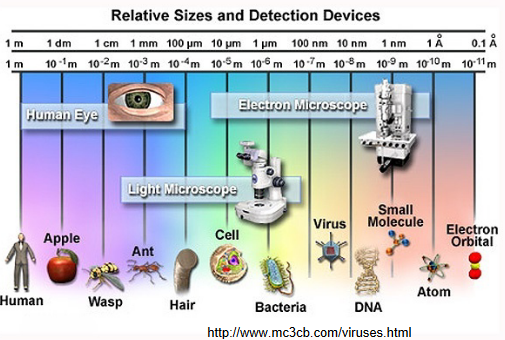
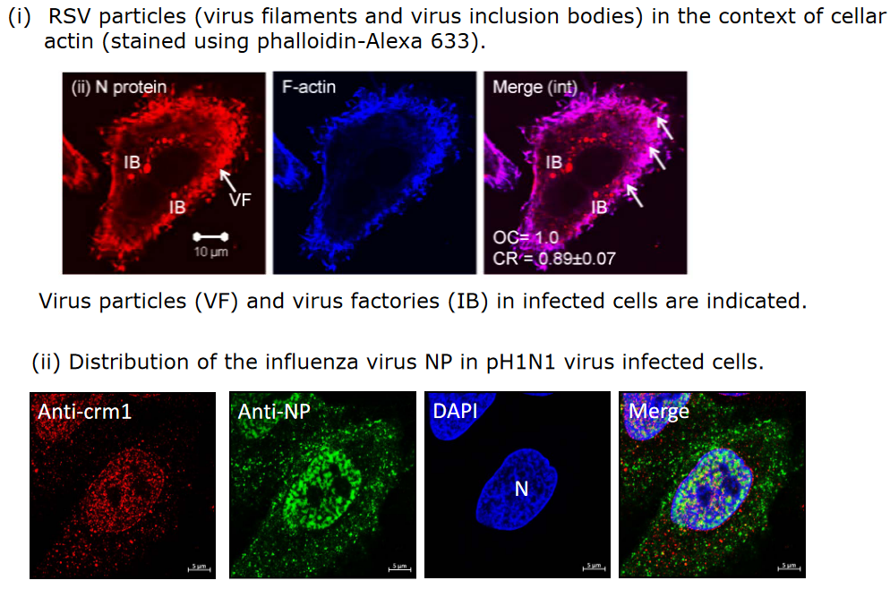
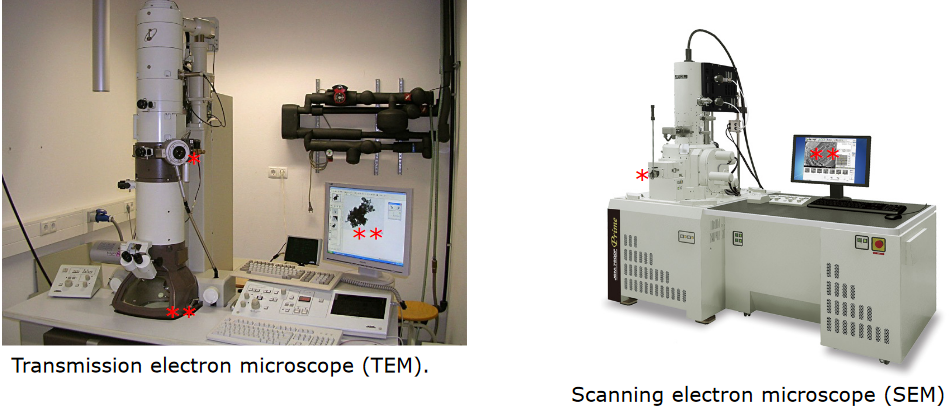
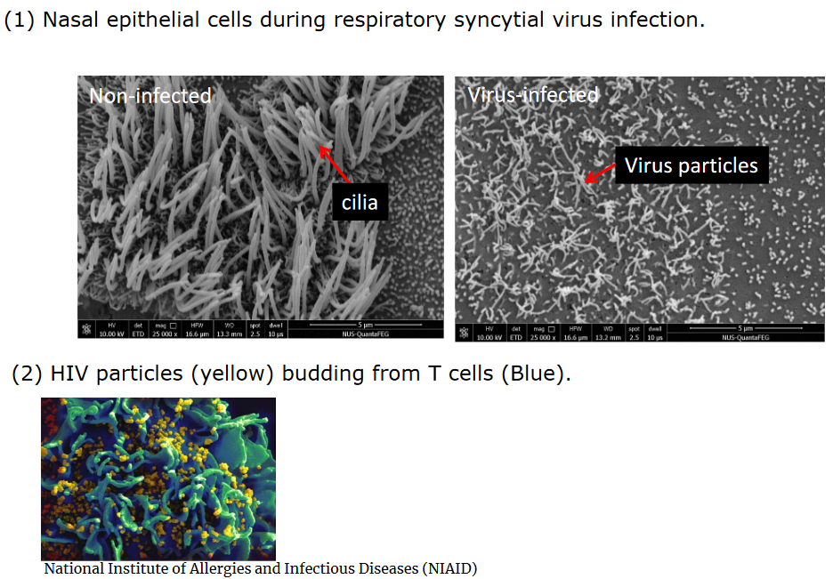
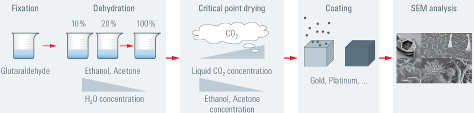
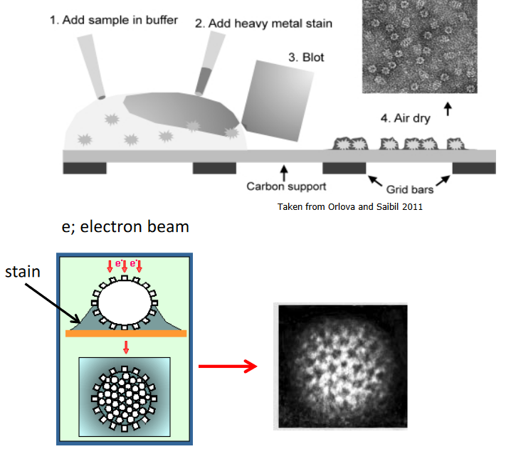

2 Seeing Viruses
The study of parasites, fungi, bacteria, and viruses can be broken down into different parts, and each entity has their own way of storing genetic information. This, in turn, affects the way that they divide and interact with the organisms that they infect.
This week’s lecture talks about light and electron microscopy.
2.1 Light Microscopy
2.1.1 Fluorescence microscopy
Fluorescence microscopy is a way to get a closer look at cells. In this approach and context, scientists use antibodies that stick to specific parts of the virus. The antibodies usually have a fluorescent tag that glow when light is shone on it. Different tags glow different colors, and this information is useful to help scientists identify what they see.
This kind of microscopy can help scientists see parts of viruses in the context of cellular compartments. Some examples of antibodies and the structures they illuminate include:
- Anti-Lamin \(\rightarrow\) Nucleus
- Anti-GM130 \(\rightarrow\) Golgi
- Anti-LAMP1 \(\rightarrow\) Lysosome
- Phalloldin FITC \(\rightarrow\) F-actin
- Cholera toxin B subunit-FITC \(\rightarrow\) GM1 in lipid rafts
- DAPI \(\rightarrow\) Nucleus
2.1.2 Fixed Cell Viewing

Sometimes, scientists also use special liquids to fixate cells that have been infected by viruses in order to study them. Different antibodies are then used to color parts of the virus and the cell; this helps scientists see how the virus and the cell’s structures are connected.
2.1.3 Live Fluorescence Imaging
This kind of microscopy involves watching cells without making them remain still. These cells are kept alive and healthy under certain conditions.
Scientists create viruses that have a protein that glows (i.e., a little “light bulb”) and they can also create cells that produce glowing proteins. This enables scientists to see what is happening inside the cells at the moment.
2.2 Electron Microscopy

Using an electron microscope is a complicated deal and one needs expertise to operate and prepare samples. On one hand, electron microscopes can magnify and show a lot of tiny details, but there’s a downside to this: the microscope works in a vacuum - a space without air - so samples need to be dry.
Scientists use these techniques to see things up close using special labels. They attach tiny gold particles to antibodies, and these antibodies can be seen under the microscope and identify specific parts in the samples that they’re looking at.
2.2.1 Scanning Electron Microscopy (i.e., SEM)

Scanning electron microscopy (i.e., SEM) is a method used to look at the outside of cells or bigger parts like viruses. Cells are first treated with something called critical point drying to make sure that they’re ready for the microscope.

The above figure outlines how SEM typically works:
Fixation
Scientist ensure that the cells or samples are fixed. This is almost like taking a picture to ensure that everything stays still.
Drying
Water is removed from the samples. Water can mess up the microscope.
Critical Point Drying
This is akin to freeze-drying, but is a technique that helps keep the samples in a good shape for the microscope.
Coating
The sample is coated with a thin layer of a special material - usually metal - to make the samples stronger and ready for the microscope.
SEM Analysis
The sample is put into a SEM - this microscope uses special light to take a super close-up picture of the samples. Scientists can then study these pictures to know more about what it is that they’re looking at.
2.2.2 Transmission Electron Microscopy (i.e., TEM)
2.2.2.1 Negative Staining
Negative staining is a way to look at virus particles, their morphology, and detect viruses in clinical material. In this setup, special heavy metals make the virus parts stand out more. Uranyl acetate and phosphotungstic acid are two common choices; these agents don’t color the virus, but they make them easier to see under an electron microscope.
Scientists also use a special grid to look at the viruses under the electron microscope.

The above figure outlines how TEM works:
Adding Sample to Buffer
Samples are added to a special liquid called a buffer - this helps keep sample safe and ready for the following step.
Adding Heavy Metal Stain
A special “paint” made out of heavy metals is added to the sample - this helps the microscope see the sample better by giving it strong contrasts (i.e., like dark ink on white paper).
Blotting
The sample is put onto a special surface that soaks up the extra liquid.
Air Drying
The sample is left in the air to dry. This helps the heavy metal paint to stick to the sample and make it ready for viewing.
2.2.2.2 Immuno-Negative Staining
When negative staining is performed with immunolabelling, this is called immuno-negative staining. First, immunolabelling - putting special “labels” on the objects of interests - is carried out. Then, negative staining is carried out to make the sample easier to look at.
2.2.2.3 Thin Sections
To study samples closely, scientists need to prepare them carefully:
- First, they make the cells stay still using a process called fixation.
- They treat the cells with chemicals and then remove water from them.
- They put the cells into a special plastic material to keep them in shape. To see virus-infected cells, they need to cut super thin slices, like cutting very thin pieces of cheese. These slices are usually between 80 and 100 nanometers thick.
- They use a special machine called an ultramicrotome to do this cutting. Once the slices are ready, they put them on a small grid and add some coloring to help see the details better when they use the electron microscope.
Samples can also be immunolabelled before or after embedding (i.e., keeping the cells into a special plastic material) and sectioning.
2.3 Pros and Cons of Light and Electron Microscopy
The following table lists some pros and cons as they pertain to electron and light microscopy:
| Pros.of.Light.Microscopy | Cons.of.Light.Microscopy |
|---|---|
| Simple to do | Limited Resolution of 200 to 300 nm |
| Specimen is in solvent |
| Pros.of.Electron.Microscopy | Cons.of.Electron.Microscopy |
|---|---|
| Good Resolution | Time Consuming |
| Need Dried Samples | |
| Can lead to imperfections in final viewing because it’s just so difficult |